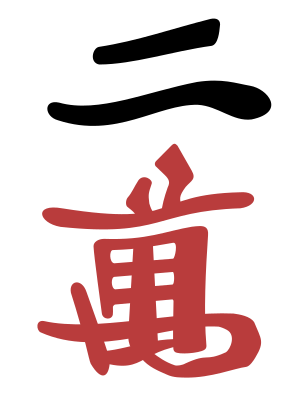
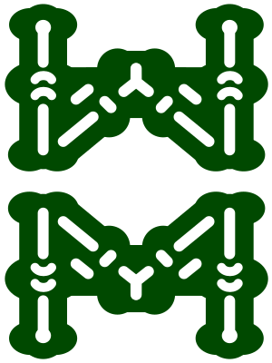

janpo
东1局・第 11 巡 东风战・终局・南家 +12300 宝牌 上帝视角座位 0危险度
上帝视角座位 0危险度
西31200
北17800
东１局
0 本场・供托 2
余 44 张
南26000
东24000
本桌点数在中央盘
危险度启发式
现物（安全）
筋
无筋
宝牌周边
复盘・座位 0
只看值得看的那几手：122 手里显示 9 手。
判据 ▾
两条判据：引擎的试打表里还有更好的换法，或者强 AI 给自己那一手的概率过了阈值、而你打的不在它头两条里。
强 AI 逐手看过了：122 手里有 64 手与你不同。
信息辅助座位 0・东家
向听1 向听
有效牌4 种 14 枚




现物6 枚（对两家立直）
无筋3 种
这一手
第 37 手 手切1万
1向听 → 1向听 有效牌 39 枚 4 种 危险度 无筋（这一手第 3 安全）
更好的候选：打8筒（有效牌 39 枚，+18；危险度更低）、打9万（有效牌 39 枚；危险度更低（现物））
〔强 AI〕手切3索（与你不同） 它给了 3 条：手切3索 0.62、摸切9万 0.21、立直 0.11 你打的手切1万 0.21（第 2）
这几行是怎么算的 ▾
这几行是引擎按你当时看得见的牌现算的（向听、有效牌、危险度），不是打分——「更好的候选」只列在这几个数上不比你差、至少一项更好的那几张。点某一手：牌桌摆出那一刻的快照（回放里时间轴跟着跳过去），按「回到原处」就回来。
当时它说的
万子 234 已成形，筒子 45678 两面带宝牌，本手的选择在「押牌进张」与「回头守」之间。下家立直已 4 巡，河里两张筒子均为低牌，1万未过筋但万子壁上有两枚 4万被吃，安全度尚可。兼顾保留 8筒双碰的改良，先切 1万。
说碰中打1索，役牌确定后全力向断幺进张，8索双碰改良可期。
说追立：45678筒两面，宝牌2枚在手，打点与速度都够。
想…（第 11 巡・在想）
说切8筒守住万子面子，立直家现物优先，保持形式听牌的退路。
配桌
对局长度东风战半庄战
规则赤宝牌食断
种子
座位 0
座位 1
座位 2
座位 3
档案
provider
模型
API key